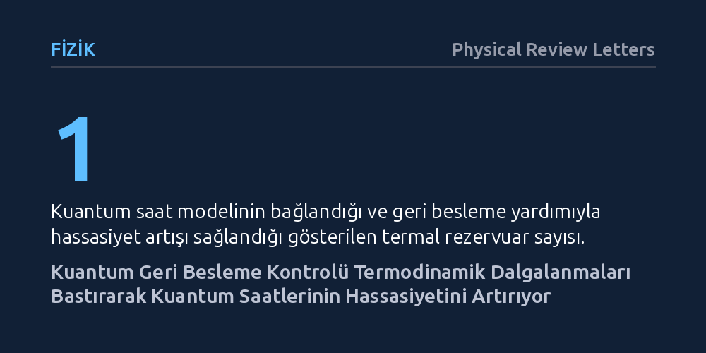

FIZIK · Physical Review Letters · 2026-10-18
Araştırmacılar, açık kuantum sistemlerindeki geri besleme kontrolünün akım dalgalanmalarını ve termodinamik hassasiyet sınırını nasıl etkilediğini araştırdı. Bilgi akışını kuantum karşılıklı bilgisiyle modelleyerek sonlu zamanlı yeni bir bağıntı türettiler ve tek bir termal banyoya bağlı kuantum saatinin hassasiyetinin bu yolla artırılabileceğini gösterdiler.
Kuantum ölçeğinde kesinliğin sadece harcanan enerji ve üretilen entropiyle değil, toplanan bilginin sisteme geri beslenmesiyle de artırılabileceğini matematiksel olarak ortaya koyuyor.

Klasik dünyada bir saatin sarkacı veya bir motorun pistonu son derece kararlı görünürken, moleküler ve kuantum ölçeklere inildiğinde her şey termal dalgalanmaların etkisi altındadır. Mikro ölçekteki sistemlerde akımlar ve enerji transferleri düzensizce çalkalanır. Termodinamik belirsizlik bağıntısı adı verilen temel kural, bu dalgalanmaları bastırmanın ve süreci daha kesin kılmanın bedelinin sistemde daha fazla entropi üretmek, yani termodinamik bir maliyet ödemek olduğunu söyler.
Fizikçiler uzun süredir bir sistemi sadece dışarıdan enerjiyle beslemek yerine, anlık durumunu izleyip buna göre müdahale etmenin (geri besleme kontrolünün) dalgalanmaları bastırıp bastıramayacağını anlamaya çalışıyordu. Özellikle kuantum mekaniğinde ölçüm ve denetim, doğrudan bilgi edinimiyle iç içedir. Bu çalışmanın temel sorusu, kuantum geri beslemesinin termodinamik belirsizlik bağıntısına nasıl dahil edileceği ve toplanan bilginin kesinliği artırmada nasıl bir rol oynayacağıydı.
Araştırmacılar bu soruyu yanıtlamak amacıyla açık kuantum sistemleri termodinamiğine dayanan analitik bir kuramsal çerçeve geliştirdi. Termal bir çevreyle zayıf etkileşim halindeki açık kuantum sistemlerini ele alarak, çevreyle enerji alışverişi sırasında gerçekleşen kesintili durum değişimlerini (kuantum sıçramalarını) sürekli biçimde izlediler.
İzleme sürecinde elde edilen anlık bilgiye göre sisteme hafızasız (Markov tipi) geri besleme uygulandığı varsayıldı. Kontrol mekanizmasının sisteme kattığı bilgi miktarını ölçmek için kuantum bilgi kuramının temel araçlarından biri olan kuantum karşılıklı bilgisi kullanıldı. Böylece rastgele bir zaman aralığında toplanan akımların dalgalanmalarını hem entropi üretimi hem de bilgi akışı terimleriyle birleştiren sonlu zamanlı bir belirsizlik bağıntısı türetildi.
Türetilen yeni bağıntı, klasik termodinamik belirsizlik sınırının kuantum geri besleme altında nasıl genişlediğini gösterdi. Elde edilen eşitsizlik, akım dalgalanmalarını bastırmanın yalnızca üretilen entropiye değil, geri besleme sırasında sistemle denetleyici arasında kurulan kuantum karşılıklı bilgisine de doğrudan bağlı olduğunu ortaya koydu. Başka bir deyişle, sistem hakkında toplanan bilgi, dalgalanmaları bastırmak için tıpkı termodinamik enerji gibi bir kaynak işlevi gördü.
Araştırmacılar bu teorik sonucu somutlaştırmak için bir kuantum saat modeli analiz etti. Normalde tek bir ısı banyosuna bağlı mikro sistemlerin yüksek zamanlama hassasiyetine ulaşması termodinamik kısıtlar nedeniyle zordur. Ancak çalışmada, uygulanan kuantum geri besleme kontrolü sayesinde saatin tik taklarındaki dalgalanmaların bastırılabildiği ve tek bir termal rezervuar varlığında bile saatin hassasiyetinin artırılabildiği matematiksel olarak kanıtlandı.
Bu bulgular, mikroskobik ölçekte çalışan hassas sensörler, kuantum saatler ve nano-motorlar için temel bir teorik kılavuz sunuyor. Bir cihazın kararlılığını artırmak için sadece daha fazla enerji tüketmek yerine, anlık durumunu ölçüp uygun geri besleme uygulayarak termodinamik sınırlamaları bilgi yardımıyla aşmanın temel kuralları belirlenmiş oldu.
Yine de çalışmanın tamamen teorik ve analitik bir modelleme olduğunu vurgulamak gerekir. Gerçek kuantum devrelerinde veya süperiletken kübitlerde yapılacak uygulamalarda, ölçüm cihazlarının kendi gürültüleri ve kontrol gecikmeleri de sisteme etki edecektir. Buna rağmen çalışma, bilgi tabanlı kontrolün kuantum termodinamiğindeki sınırlarını netleştiren sağlam bir teorik zemin oluşturuyor.